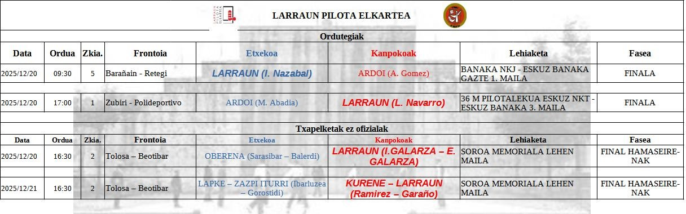

LARRAUN PILOTA ELKARTEA
Club de Pelota Vasca del Valle de Larraun · Lekunberri (Navarra)
Larraungo Pilota Elkartea · Lekunberri (Nafarroa)
Club de Pelota Vasca del Valle de Larraun · Lekunberri (Navarra)
Larraungo Pilota Elkartea · Lekunberri (Nafarroa)
Larraun Pilota Elkartea es un club deportivo que agrupa a varios municipios del Valle de Larraun, fomentando la práctica de la pelota vasca y sus valores tradicionales.
Larraun Pilota Elkartea Larraungo hainbat herri biltzen dituen kirol elkartea da, euskal pilotaren praktika eta balioak sustatuz.
Con sede en Lekunberri (Navarra), el club trabaja con deportistas de diferentes edades y niveles, promoviendo la convivencia entre municipios del valle.
Lekunberrin (Nafarroa) egoitza duen elkarteak adin eta maila desberdinetako pilotariekin lan egiten du, haraneko herrien arteko elkarlana sustatuz.
Modalidad tradicional de la pelota vasca.
Euskal pilotaren modalitate tradizionala.
Velocidad y precisión en el frontón.
Abiadura eta zehaztasuna frontoian.
Modalidad dinámica y formativa.
Modalitate dinamiko eta hezitzailea.
Larraun Pilota Elkartea agrupa a deportistas de los siguientes municipios:
Larraun Pilota Elkarteak ondoko herrietako pilotariak biltzen ditu:
Categorías: Benjamín y Alevín
Kategoriak: Benjamin eta Alebin
Categorías: Infantil, Cadete, Juvenil y Senior
Kategoriak: Infantil, Kadete, Jubenil eta Senior
Horarios de entrenamientos por categorías (a actualizar por el club).
Kategorien araberako entrenamendu ordutegiak (eguneratzeko).
| Categoría | Día | Hora | Frontón |
|---|---|---|---|
| Benjamín / Alevín | — | — | — |
| Infantil a Senior | — | — | — |
Imágenes del club (procedentes de Facebook).
Klubeko irudiak (Facebooketik).
La escuela del club está abierta a niños y jóvenes del Valle de Larraun.
Pilota eskola Larraungo haur eta gazteei zuzenduta dago.
Consulta los próximos partidos y competiciones oficiales del club.
Hemen ikus ditzakezu klubeko hurrengo partidak eta txapelketak.
📍 Lekunberri – Valle de Larraun (Navarra)
🔗 Facebook: Larraun Pilota Elkartea